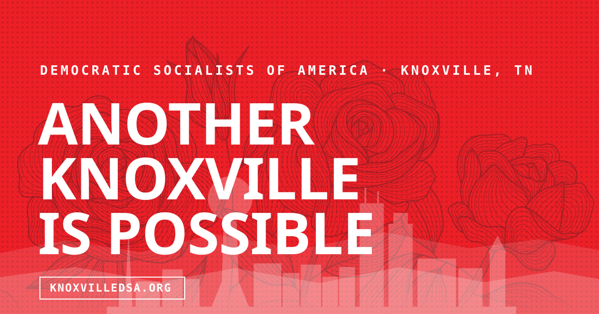

About this prototype Share preview
Polish for sharing
How the link looks when you share it
When an organizer drops the site in a group chat or posts it to social, the link should look like a real organization, not a bare address.
What goes into a link preview
When you paste a link into Signal, iMessage, Slack, Twitter, or Facebook, the app reaches out to the page and reads a small block of machine-readable metadata: a title, a description, and an image. That is the Open Graph standard, and it is what turns a naked URL into a card with a headline and a picture instead of just raw text.
The share card
The share card is an image in the 1200×630 ratio that appears when someone posts a link to the site. Without it, apps fall back to a random thumbnail, a blank gray box, or nothing. The Knoxville Area DSA card uses the labor-poster look from this prototype: a bold red flood with the chapter name and a short line, so it reads immediately as the chapter even before someone taps.
The favicon
The favicon is the small icon in the browser tab, in bookmarks, and on phone home screens when someone adds the site to their lock screen. It is the chapter’s first mark in any crowded list of tabs. The prototype uses an SVG favicon (a small version of the chapter mark) that scales crisply on every screen resolution, from a laptop to a retina phone.
Page metadata
Each page has its own title and description, not just the homepage. When an organizer shares a link to the Events page or the Public Transportation working group, the preview shows that page’s specific title and description rather than the generic site headline. Search engines use the same fields, so a page with a clear title and description is one that shows up well in results and is easy to find again later.
Live preview
The link in a real chat
Here is how a Knoxville Area DSA link looks when you drop it into a message thread or post it to social media.

knoxvilledsa.org
Knoxville Area DSA
Organizing in East Tennessee for a democratic economy and society that meets human needs, not profits. Come to a meeting, join a working group, and get involved.
This is the actual share card and favicon used across the prototype. The production build rasterizes the card to PNG and uses the live domain (some apps prefer PNG over SVG).
It is on every page now
Every page in this prototype carries these tags, generated from that page’s own title and description. The title and description fields sit at the top of each HTML file and drive both the browser tab text and the share card copy. Change the description on the Events page and the Signal preview updates the next time someone rebuilds and shares.
The same automated pass that injects the prototype ribbon and the live-countdown span into the bulletin strip also writes the Open Graph block uniformly. No page has to manage it by hand. See the full picture on About this prototype.
Get involved
Ready to organize?
Come to a General Meeting, join a working group, or just say hello. The chapter is here, and so is your place in it.